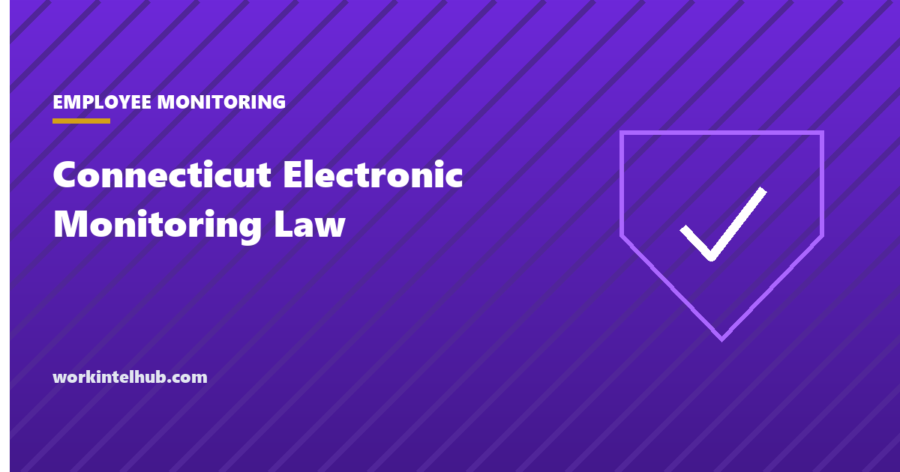

Connecticut Electronic Monitoring Law

Connecticut has required employers to give prior written notice of electronic monitoring since 1998. From 1 October 2026, Public Act 26-73 changes what that notice has to say and where it has to be posted: it must name the specific locations on the premises where monitoring may occur, a notice must be posted at each of those locations, and every employee hired on or after that date must receive a plain-language statement about the conduct that can be monitored without notice.
The generator below produces the three documents. The rest of the page covers what the existing law already required, exactly what the amendment adds, the exceptions, and the questions the statute does not answer.
Generate the notices
Types of monitoring in use
Three documents: the prior written notice for current employees, the posted notice for each location, and the plain-language statement for new hires. Nothing you type leaves your browser. Have counsel confirm the location list before 1 October.
What the law already required
Connecticut General Statutes section 31-48d defines electronic monitoring as "the collection of information on an employer's premises concerning employees' activities or communications by any means other than direct observation, including the use of a computer, telephone, wire, radio, camera, electromagnetic, photoelectronic or photo-optical system". Security monitoring of common areas open to the public is outside the definition.
Before the amendment the statute required two things: prior written notice to all employees who may be affected, stating the types of monitoring that may occur, and a notice posted in a conspicuous place readily available for viewing. It carved out monitoring without notice where the employer has reasonable grounds to believe an employee is engaged in conduct that violates the law, violates the legal rights of the employer or other employees, or creates a hostile workplace environment, and the monitoring may produce evidence of it. Penalties are civil, assessed by the Labor Commissioner: $500 for a first offence, $1,000 for a second, $3,000 for each further one. There is no private right of action.
Those elements all survive. The amendment adds to them rather than replacing them, so an employer that has never given the original notice has two gaps to close, not one.
What changes on 1 October 2026
| Requirement | Before | From 1 October 2026 |
|---|---|---|
| Prior written notice | Types of monitoring | Types of monitoring and the specific locations on the premises where it may occur |
| Posted notice | One, in a conspicuous place | In a conspicuous general place and at each specific location where monitoring may occur, describing those locations |
| New hires | Covered by the general notice | Each employee hired on or after 1 October 2026 receives a plain-language written statement of which activities are prohibited and may be monitored without prior notice |
| Definition of monitoring | Unchanged | |
| Misconduct exception | Unchanged | |
| Penalties | Unchanged: $500, $1,000, $3,000 | |
Two exceptions apply to the new location requirement. An employer need not disclose specific locations where it has reasonable grounds to conduct the monitoring for security or employee safety, and airport premises are treated separately. Neither exception removes the obligation to give the general notice.
What the statute does not settle
Remote employees. The definition is tied to "the employer's premises". A laptop in an employee's kitchen is not on the premises, and the statute does not say whether monitoring of it is covered. The prudent reading is that the company's systems are the relevant premises for software monitoring, which is why the generator's default location list includes "company laptops wherever used". Giving the notice costs nothing; omitting it and being wrong costs a penalty per employee.
What "location" means for software. A camera has a location. Email monitoring does not, in the physical sense. The amendment's text was written with premises in mind, and the practical approach is to name the physical places for physical monitoring and the systems for software monitoring, in the same list.
Existing employees and the new-hire statement. The statement is required for employees hired on or after 1 October 2026. Nothing prevents giving it to everyone, and doing so removes a two-tier record.
Before 1 October
- Inventory the monitoring. Every camera, access system, endpoint agent, email archive, call log and vehicle tracker. Our guide to writing a monitoring policy starts with the same inventory.
- Map each to a location or system, and decide which, if any, fall under the security exception.
- Issue the revised written notice to every current employee and record receipt. The monitoring consent form can carry it.
- Post the location notices at each place named, and keep the general posting.
- Add the new-hire statement to the day-one pack; the onboarding checklist has a line for it.
- Diarise a review for each new camera or tool, because a new location needs a new posting before it goes live.
Connecticut is one of four states with a general monitoring notice statute. New York, Delaware and, from July 2026, Maine have their own, each with different triggers and content, and an employer with staff in more than one of them needs to meet all of them. The state-by-state summary sets them side by side.
Key takeaways
- From 1 October 2026 the written notice must name the specific locations on the premises where monitoring may occur, and a notice must be posted at each of them.
- Every employee hired on or after that date gets a plain-language statement of the conduct that can be monitored without prior notice.
- The definition, the misconduct exception and the penalties of $500, $1,000 and $3,000 are unchanged.
- Locations need not be disclosed where monitoring is for security or employee safety on reasonable grounds; airports are treated separately.
- The statute is tied to premises and does not settle remote monitoring. Name company systems as locations and give the notice anyway.
- Inventory, map, notify, post, add the new-hire statement, and re-post before any new tool goes live.
Frequently asked questions
What is Connecticut's electronic monitoring law?
Connecticut General Statutes section 31-48d, in force since 1998, requires employers to give employees prior written notice of the types of electronic monitoring that may occur and to post a notice in a conspicuous place. Monitoring means collecting information on the employer's premises about employees' activities or communications by any means other than direct observation.
What does Public Act 26-73 change?
From 1 October 2026 the written notice must also identify the specific locations on the premises where monitoring may occur; a notice must be posted at each of those locations as well as in a general conspicuous place; and each employee hired on or after that date must receive a plain-language written statement of which activities are prohibited and may be monitored without prior notice.
Does the Connecticut law cover remote employees?
The statute refers to monitoring on the employer's premises and does not address employees working from home. The cautious approach is to treat company devices and accounts as premises for software monitoring, list them as locations, and give the notice to remote staff as well.
Can a Connecticut employer monitor without notice?
Yes, where it has reasonable grounds to believe an employee is engaged in conduct that violates the law, violates the legal rights of the employer or other employees, or creates a hostile workplace environment, and the monitoring may produce evidence of that conduct. The new-hire statement exists to tell employees what those categories are.
What are the penalties?
Civil penalties assessed by the Labor Commissioner: $500 for a first violation, $1,000 for a second and $3,000 for each subsequent one. There is no private right of action under the statute.
Do existing employees need a new notice?
Yes, if the current notice does not name the specific locations where monitoring may occur. The new-hire statement is required only for employees hired on or after 1 October 2026, but giving it to everyone keeps one record rather than two.